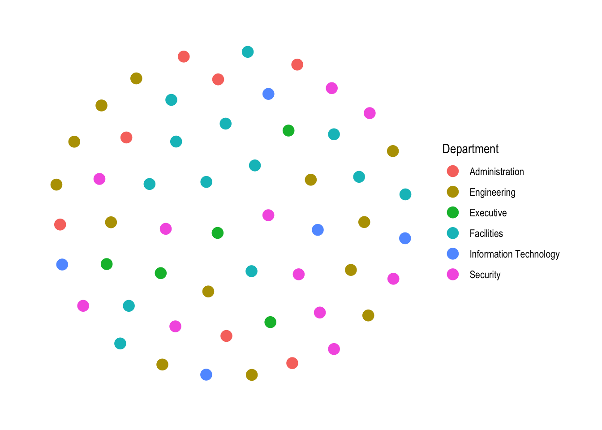
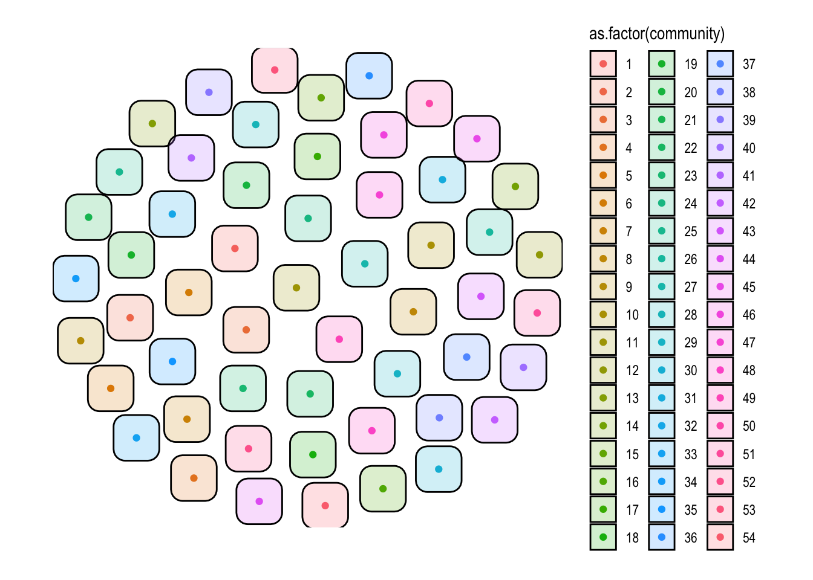

# Install required packages (run only once)
# install.packages(c("tidyverse", "lubridate", "igraph", "tidygraph", "ggraph", "visNetwork", "ggforce", "concaveman"))
# Load libraries
library(tidyverse)
library(lubridate)
library(igraph)
library(tidygraph)
library(ggraph)
library(visNetwork)
library(ggforce)
library(concaveman)hands-on_Exercise 5: Modelling, Visualising and Analysing Network Data
Step 1: Load the Data
# Read nodes and edges data
edges <- read_csv("/Users/sharon/OneDrive - Singapore Management University/isss608data/hands-on_exercise5/GAStech_email_edge.csv")Rows: 9063 Columns: 6
── Column specification ────────────────────────────────────────────────────────
Delimiter: ","
chr (5): source, target, SentDate, Subject, MainSubject
time (1): SentTime
ℹ Use `spec()` to retrieve the full column specification for this data.
ℹ Specify the column types or set `show_col_types = FALSE` to quiet this message.nodes <- read_csv("/Users/sharon/OneDrive - Singapore Management University/isss608data/hands-on_exercise5/GAStech_email_node.csv")Rows: 54 Columns: 4
── Column specification ────────────────────────────────────────────────────────
Delimiter: ","
chr (3): label, Department, Title
dbl (1): id
ℹ Use `spec()` to retrieve the full column specification for this data.
ℹ Specify the column types or set `show_col_types = FALSE` to quiet this message.# Preview the data
glimpse(edges)Rows: 9,063
Columns: 6
$ source <chr> "Sven.Flecha", "Sven.Flecha", "Kanon.Herrero", "Kanon.Herr…
$ target <chr> "Isak.Baza", "Lucas.Alcazar", "Felix.Resumir", "Hideki.Coc…
$ SentDate <chr> "6/1/2014", "6/1/2014", "6/1/2014", "6/1/2014", "6/1/2014"…
$ SentTime <time> 08:39:00, 08:39:00, 08:58:00, 08:58:00, 08:58:00, 08:58:0…
$ Subject <chr> "GT-SeismicProcessorPro Bug Report", "GT-SeismicProcessorP…
$ MainSubject <chr> "Work related", "Work related", "Work related", "Work rela…glimpse(nodes)Rows: 54
Columns: 4
$ id <dbl> 1, 2, 3, 4, 5, 6, 7, 44, 45, 46, 8, 9, 10, 11, 12, 13, 14, …
$ label <chr> "Mat.Bramar", "Anda.Ribera", "Rachel.Pantanal", "Linda.Lago…
$ Department <chr> "Administration", "Administration", "Administration", "Admi…
$ Title <chr> "Assistant to CEO", "Assistant to CFO", "Assistant to CIO",…Step 2: Wrangle Dates
# Convert SentDate and extract weekday
edges <- edges %>%
mutate(SendDate = dmy(SentDate),
Weekday = wday(SendDate, label = TRUE, abbr = FALSE))Step 3: Aggregate Edges
edges_aggregated <- edges %>%
group_by(source, target, Weekday) %>%
summarise(Weight = n(), .groups = "drop")Step 4: Clean and Validate Data
# Remove rows with NA
edges_aggregated <- edges_aggregated %>%
filter(!is.na(source), !is.na(target), !is.na(Weekday), !is.na(Weight))
nodes <- nodes %>%
filter(!is.na(id))
# Ensure edge IDs match nodes
valid_ids <- nodes$id
edges_aggregated <- edges_aggregated %>%
filter(source %in% valid_ids, target %in% valid_ids)Step 5: Create Network Graph Object
GAStech_graph <- tbl_graph(nodes = nodes, edges = edges_aggregated, directed = TRUE)
# Display basic info
GAStech_graph# A tbl_graph: 54 nodes and 0 edges
#
# A rooted forest with 54 trees
#
# Node Data: 54 × 4 (active)
id label Department Title
<dbl> <chr> <chr> <chr>
1 1 Mat.Bramar Administration Assistant to CEO
2 2 Anda.Ribera Administration Assistant to CFO
3 3 Rachel.Pantanal Administration Assistant to CIO
4 4 Linda.Lagos Administration Assistant to COO
5 5 Ruscella.Mies.Haber Administration Assistant to Engineering Group Mana…
6 6 Carla.Forluniau Administration Assistant to IT Group Manager
7 7 Cornelia.Lais Administration Assistant to Security Group Manager
8 44 Kanon.Herrero Security Badging Office
9 45 Varja.Lagos Security Badging Office
10 46 Stenig.Fusil Security Building Control
# ℹ 44 more rows
#
# Edge Data: 0 × 4
# ℹ 4 variables: from <int>, to <int>, Weekday <ord>, Weight <int>Step 6: Static Network Plot (Fruchterman-Reingold Layout)
ggraph(GAStech_graph, layout = "fr") +
geom_edge_link(aes(width = Weight), alpha = 0.6) +
geom_node_point(aes(color = Department), size = 4) +
theme_graph()
Step 7: Compute Betweenness Centrality
GAStech_graph <- GAStech_graph %>%
mutate(betweenness = centrality_betweenness())Step 8: Visualise Centrality
ggraph(GAStech_graph, layout = "fr") +
geom_edge_link(alpha = 0.2) +
geom_node_point(aes(size = betweenness, color = Department)) +
theme_graph()Step 9: Community Detection and Visualisation with Hulls
GAStech_graph <- GAStech_graph %>%
mutate(community = group_edge_betweenness())
layout <- create_layout(GAStech_graph, layout = "fr")
ggraph(layout) +
geom_edge_link(alpha = 0.2) +
geom_node_point(aes(color = as.factor(community))) +
geom_mark_hull(
aes(x = x, y = y, group = community, fill = as.factor(community), label = community),
concavity = 5, alpha = 0.2
) +
theme_graph()
Step 10: Prepare for Interactive Graph
nodes_vis <- nodes %>%
rename(id = id, label = label, group = Department)
edges_vis <- edges_aggregated %>%
rename(from = source, to = target)Step 11: Interactive Network Graph with visNetwork
visNetwork(nodes_vis, edges_vis) %>%
visIgraphLayout(layout = "layout_with_fr") %>%
visEdges(arrows = "to", smooth = TRUE) %>%
visOptions(highlightNearest = TRUE, nodesIdSelection = TRUE)